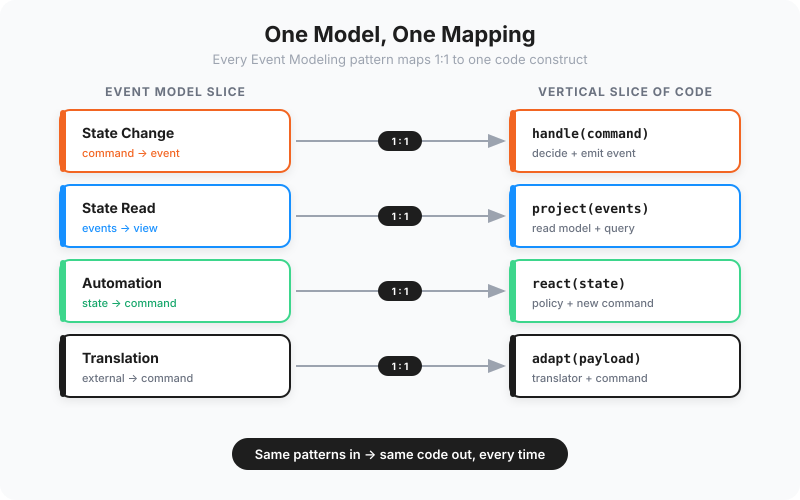

A familiar ritual has taken hold in teams experimenting with AI development. You write one enormous specification file — a sprawling Markdown or HTML document describing every screen, rule, and edge case — you feed it to an agent, and you ask it to produce the application. The first run is genuinely thrilling. Something resembling working software appears in minutes. Then you ask for a change, the agent regenerates, and subtly different code comes out. A rule you relied on yesterday quietly behaves differently today. You tighten the prose, run it again, and watch the token meter spin.
This is prompt-and-pray, and it has two failure modes baked in. The output is non-deterministic, so the same intent produces different code on each run. And the cost grows with every iteration, because each change means re-reading and re-emitting the whole system. Neither problem is the model's fault. Both come from asking the model to do something it was never going to do reliably: invent an entire architecture from a wall of text.
An AI Doesn't Need a Longer Document, It Needs a System
The instinct, when results disappoint, is to write more. Add another paragraph clarifying the edge case. Append a section on naming conventions. Paste in three example files. The document swells, and the output gets marginally better and considerably more expensive.
Predictable generation does not come from volume. It comes from structure. A model produces consistent code when the specification has a consistent shape — when there is a small, fixed vocabulary of things a feature can be, and a known place each of those things belongs in the code. Give the model a system to follow instead of a story to interpret, and the guesswork disappears.
Event Modeling supplies exactly that system. It describes any information system as a sequence of slices, and every slice is one of just four kinds. There is no fifth case to reason about and no ambiguity about which kind you are looking at. That constraint is the whole point.
Four Patterns In, Four Constructs Out
The reason Event Modeling and AI generation fit together so cleanly is that the mapping between them is mechanical. Each slice type corresponds to exactly one shape in code. Translate the pattern, and you have the implementation.
- State Change becomes a command handler that validates intent and records an event. Input is a command, output is the fact that something happened.
- State Read becomes a projection that folds events into a view. Input is a stream of events, output is the data a screen or API needs.
- Automation becomes a policy that watches for a condition and issues the next command. Input is a state the system has reached, output is the action it triggers.
- Translation becomes an adapter that maps an outside message into your own vocabulary. Input is a foreign payload, output is a command your domain understands.
There is no interpretation gap here. A model that has seen this correspondence once does not need to decide how to build the next State Change slice; it follows the same translation it followed for the last one. The specification stops being a prompt to wrestle with and becomes a lookup table to apply.
Code That Reads the Same to a Human and a Machine
An agreeable side effect of this discipline is that the code it produces is the code a person would want to inherit. The same qualities that let a model write a slice correctly — small surface area, an obvious entry point, no hidden dependencies on the rest of the system — are the qualities that let an engineer open the file six months later and understand it without a tour guide.
That symmetry matters more than it sounds. AI-native software is not write-once-and-walk-away; it is read, extended, and corrected continuously, by people and agents in turn. If the code is only legible to whichever party wrote it, every handoff costs a translation. When both can read, write, and maintain the same artefact, the handoffs become free.
Getting there asks for restraint rather than cleverness. Less code, not more. Every construct tied to something the business actually asked for, so that a line of code can be traced back to a line of the model. When the implementation is a faithful echo of the specification, there is simply less to misunderstand.
"The cheapest code to generate, review, and maintain is the code that maps directly onto a rule the business recognises. Everything else is overhead you are paying a model to invent and a colleague to decode."
Coherent Context Is What Keeps Generation Honest
A model is only as good as the context it can hold in view. Scatter a single feature across a controller here, a service there, a shared data model somewhere else, and a handful of utility classes, and you force the agent to assemble the picture from fragments — exactly the situation in which it starts to guess.
Organise the system the way Event Modeling suggests and the context arrives pre-packaged. Modules line up with business capabilities, so the boundaries in the code match the boundaries in the conversation. Each feature lives in its own vertical slice, with its command, its rules, its events, its read model, and its tests gathered in one place. When an agent works on that feature, everything it needs is in front of it and nothing it doesn't need is in the way. People navigate the codebase the same way, which is not a coincidence — coherent context is just good context, whoever is reading.
Letting Go of the Scaffolding Built for Humans
Much of what we treat as software craftsmanship was invented to help large teams of people cope with large codebases. Shared information models, layered architectures, aggressive de-duplication, the whole vocabulary of "clean" abstraction — these were coping strategies for human working memory and human coordination. They earned their place.
But several of them work directly against the grain of AI generation. A shared model couples every feature that touches it, so a change in one place ripples unpredictably into others — and an agent regenerating one slice has to reason about all of them. De-duplication for its own sake invents abstractions that mean nothing in business terms, adding indirection the model must follow and a reader must unwind. Layering spreads a single feature across the stack, breaking the coherent context that made generation reliable in the first place.
The principle worth keeping is the one that was always doing the real work: avoid coupling. Two slices that never reach into each other can each be changed, regenerated, and verified in isolation. That isolation is worth far more than the handful of lines you might save by folding them into a shared helper. Reuse is a convenience; independence is a property you can build on.
The Economics: Translate Once, Not Forever
There is a hard-nosed reason to care about all of this, and it is the price of a token. Models capable enough to do serious work are not getting cheaper as fast as they are getting better, usage-based and API billing increasingly sits on top of flat subscriptions, and the most capable tiers cost the most to run. The trend line points one way.
Against that backdrop, the regenerate-from-a-giant-spec approach ages badly. Every iteration re-reads the entire specification and re-emits the entire system, so your cost scales with the size of the application and the frequency of change — precisely the two things that grow over a project's life. It is a habit that gets more expensive exactly as you come to depend on it.
Pattern translation has the opposite shape. The expensive thinking happens once, when you establish how each slice type turns into code. After that, producing the next slice is a cheap, bounded operation: read one small specification, apply one known transformation, emit one small slice. You are paying to translate a feature, not to re-imagine the system. First-time-right stops being an aspiration and becomes the default, because there is far less room for the model to wander.
How to Bootstrap the Translation
The method that makes this work in practice is refreshingly low-tech. You begin with the event model, the shared blueprint everyone agrees describes the system. Then, before asking an agent to mass-produce anything, you build a small set of reference slices by hand — or interactively, working alongside an agent, which is often faster — covering at least one slice of each of the four types.
You polish those reference slices until they are unarguably right: the structure you want, the conventions you want, the level of simplicity you want. This is the one place worth spending human attention, because everything downstream inherits from it. Once those examples exist, the agent has both halves of the dictionary in front of it — the slice as a unit in the model, and the matching slice as a unit in the code. From there its job is no longer creative; it is repetition. It applies the same translation you already validated, slice after slice, and because the transformation is fixed, the results stay consistent.
This is the same insight that runs through our assembly line: do the hard thinking once, encode it as a repeatable step, and let the line carry it forward without drift.
Keep Your Freedom to Switch
One last discipline protects everything above. The translation must not depend on any single vendor's tool, model, or bag of prompting tricks. The moment your process relies on a proprietary feature or a model-specific incantation, you have traded the freedom to move for a short-term convenience, and that trade tends to look worse over time as prices and capabilities shift underneath you.
A clean event model plus a small set of pattern-to-code translations asks very little of the underlying model. It is, by design, ordinary work: take a well-described slice, apply a known mapping, produce a known shape. Any competent model can do it, which means you are free to choose the best, the cheapest, or the most available one on any given day, and to change your mind tomorrow. The specification is the asset. The model is a replaceable part.
That is the quiet promise of pairing Event Modeling with AI-native development. The blueprint is not a prompt you burn tokens re-running until it behaves. It is a translation you establish once and reuse indefinitely — predictable, legible to humans and machines alike, and yours to carry from one tool to the next.